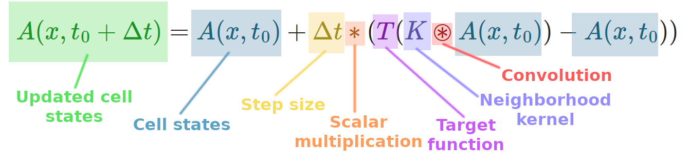

Note that the update dynamics of asymptotic Lenia do not require truncation or squashing. ALenia dynamics fit neatly into the Euler method.
While porting asymptotic Lenia to a reaction-diffusion system framework, Kojima and Ikegami (2023), noticed non-Platonism in an Orbium family glider in standard Lenia, but not in a glider in ALenia.
Based on the paper from Kojima and Ikegami, might truncation (a deviation from treatment as a true PDE, i.e. that would fit into the Euler method) have something to do with non-Platonic self-organization?
As we saw in a previous slide, Lenia uses a truncation or squashing function to restrict pixel values between 0 and 1.0.
ALenia doesn't need truncation, so the update can be treated as numerical integration of a differential equation.
... but as it turns out, ALenia does support non-Platonic gliders, as do several other examples without truncation. The NCA and SmoothLife examples in previousslides also did not use truncation or squashing functions on cell values.
Asymdrop glider behavior at native temporal step size of dt=0.25. download (mp4).
Kawaguchi, T., Suzuki, R., Arita, T., and Chan, B. (2021). "Introducing asymptotics to the state-updating rule in Lenia". In ALIFE 2021: The 2021 Conference on Artificial Life. MIT Press doi: 10.1162/isal_a_00425
Q. Tyrell Davis; July 22–26, 2024. "Non-Platonic Autopoiesis of a Cellular Automaton Glider in Asymptotic Lenia". In ALIFE 2024: The 2024 Conference on Artificial Life. ASME doi: 10.1162/isal_a_00786
Kojima, H. and Ikegami, T. (2023). "Implementation of Lenia as a reaction-diffusion system". In ALIFE 2023: Ghost in the Machine: Proceedings of the 2023 Artificial Life Conference. MIT Press. doi: 10.1162/isal_a_00638.